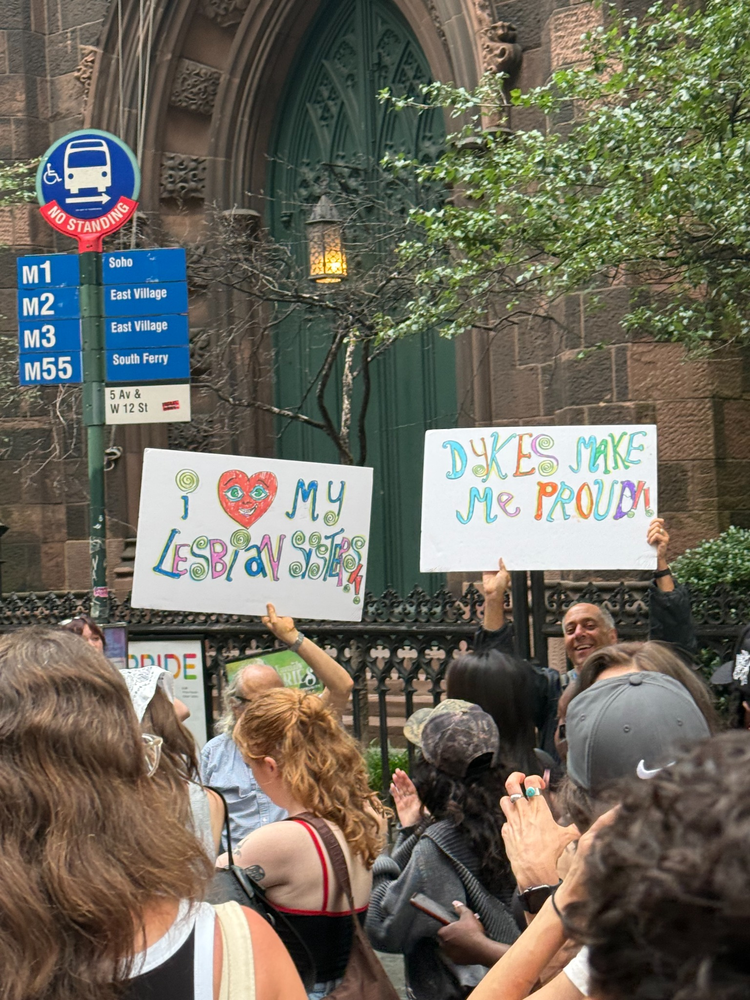
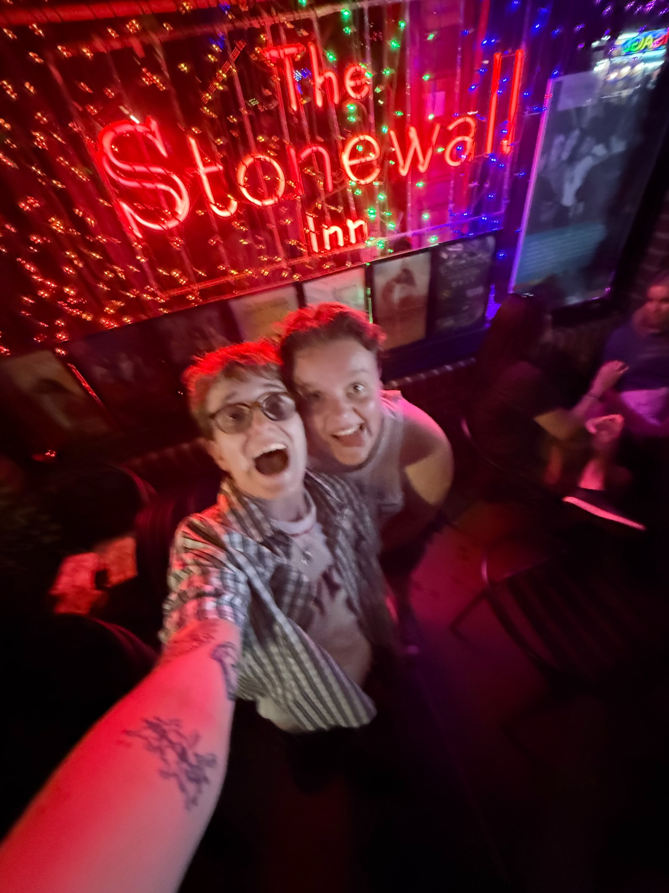

Welcome
Welcome to my website about the Stonewall Riots! This website explores the events of June 1969 and their importance to LGBTQ+ history and activism today.

Historical Background
The Stonewall Riots began on June 28, 1969, following a police raid at the Stonewall Inn in Greenwich Village, New York City. The demonstrations continued over several days and became an important turning point in the modern LGBTQ+ rights movement.
Important Historical Facts
- The uprising began on June 28, 1969.
- It took place in Greenwich Village, New York City.
- The Stonewall Inn was a gathering place for LGBTQ+ people.
- The uprising helped inspire a new era of LGBTQ+ activism.
Timeline of Stonewall
- June 28, 1969: Police raid the Stonewall Inn.
- June 28–29, 1969: People resist the raid.
- Following days: Demonstrations continue in the neighborhood.
- June 1970: Marches commemorate the first anniversary.
Historical Timeline Table
| Year | Event | Significance |
|---|---|---|
| 1969 | Stonewall Uprising | Resistance to police harassment |
| 1970 | First Pride marches | Commemorated the uprising |
| 2016 | Stonewall National Monument | Federal recognition of LGBTQ+ history |
Important People
Marsha P. Johnson
Marsha P. Johnson was a prominent LGBTQ+ activist who advocated for transgender people and homeless LGBTQ+ youth.
Sylvia Rivera
Sylvia Rivera fought for transgender rights and helped establish STAR with Marsha P. Johnson.
Stormé DeLarverie
Stormé DeLarverie was a performer and activist associated with Stonewall and LGBTQ+ community organizing.
People and Their Contributions
-
LGBTQ+ activists
- Marsha P. Johnson
- Sylvia Rivera
- Stormé DeLarverie
-
Areas of activism
- Transgender rights
- Community support
- Gay liberation
Visiting Stonewall Today
The Stonewall Inn remains an important place for learning about LGBTQ+ history and the continuing legacy of the uprising.

Research Resources
Explore these resources to learn more about Stonewall and LGBTQ+ history.